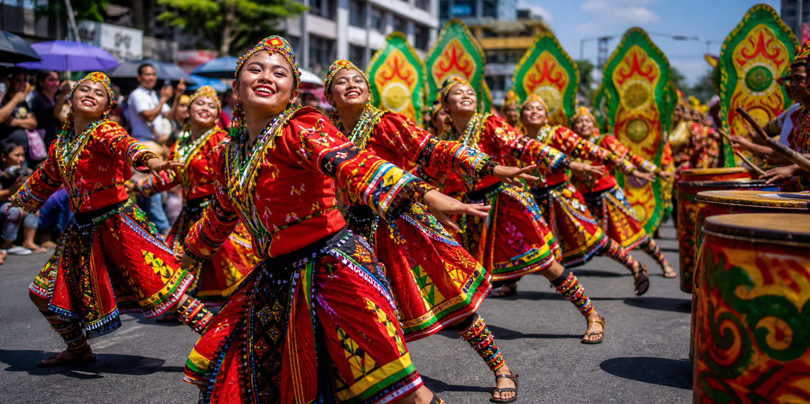
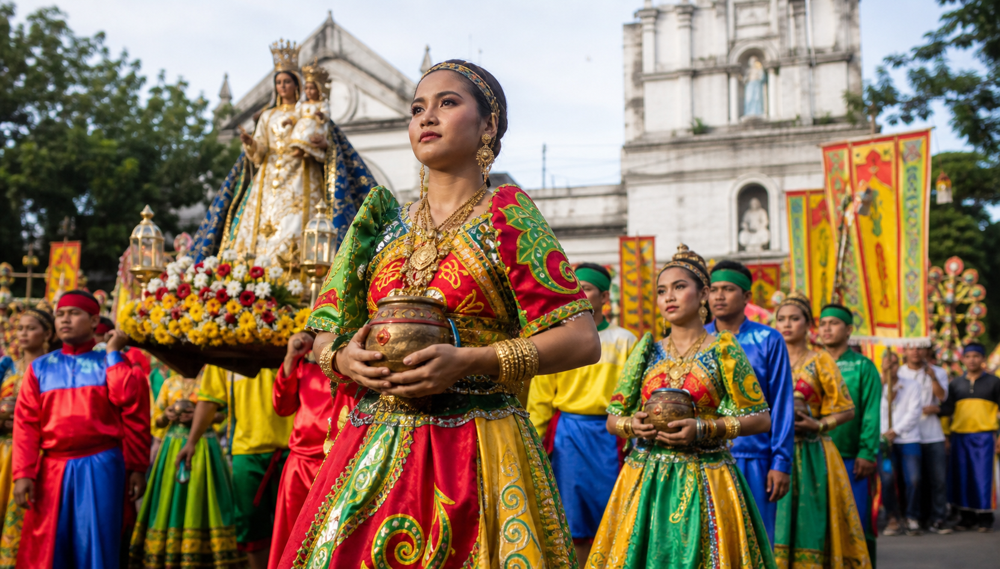
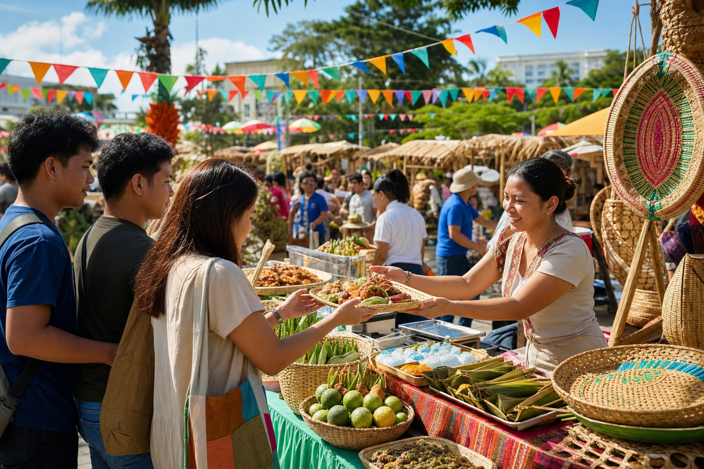
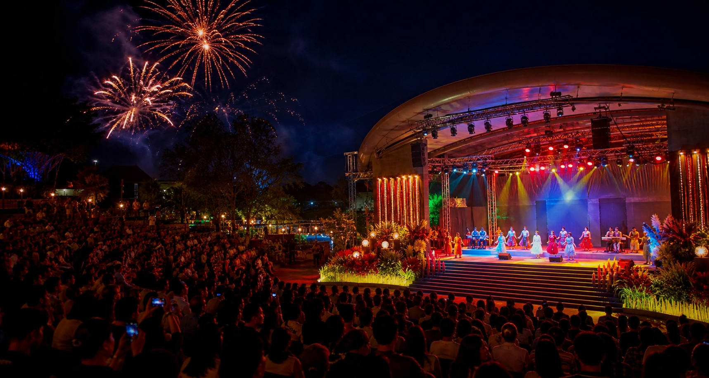

Festival Events
Ten days. One city in motion.
Plan the rituals, performances, markets, and night celebrations that make Diyandi move.
- September 20—29, 2026
- Multiple city venues
- Open to residents and visitors

Festival calendar
Start with the week.
Then follow the moment.
Official event times may adjust closer to festival week. Open each event before attending for the latest visitor details.
Official event times may adjust closer to festival week. Open event details before attending.
Shortlist lodging, transportation, and festival routes before public crowds build later in the month.
Use this week to bookmark updates for route changes, weather advisories, and visitor support.
Pack sun protection, light clothing, comfortable footwear, and a small day bag for event days.
Choose the public events you care about most so your group can avoid last-minute decisions.
The ceremonial descent opens the novena and brings the image of Sr. San Miguel closer to the community.
Local makers, regional flavors, and Iligan entrepreneurs gather in one lively public market.
A high-energy showcase of Higaonon, Maranao, and Christian traditions through dance, costume, and story.
Devotees gather for the feast of St. Michael, honoring protection, courage, and shared thanksgiving.
Homegrown performers and visiting artists close the celebration with a citywide evening concert.
A closing moment of light and music designed for families, visitors, partners, and returning Iliganons.
Complete lineup
Every featured event.
Pagkanaug Ritual
The ceremonial descent opens the novena and brings the image of Sr. San Miguel closer to the community.

01Diyandi Food & Trade Fair
Local makers, regional flavors, and Iligan entrepreneurs gather in one lively public market.

02Kasadya Street Dancing
A high-energy showcase of Higaonon, Maranao, and Christian traditions through dance, costume, and story.
Patron Procession
Devotees gather for the feast of St. Michael, honoring protection, courage, and shared thanksgiving.
Diyandi Music Night
Homegrown performers and visiting artists close the celebration with a citywide evening concert.

05Pyromusical Finale
A closing moment of light and music designed for families, visitors, partners, and returning Iliganons.
Prime viewing areas fill before the program begins.
Bring water, sun protection, and only the essentials.
Use official crossings, pickup points, and route guidance.